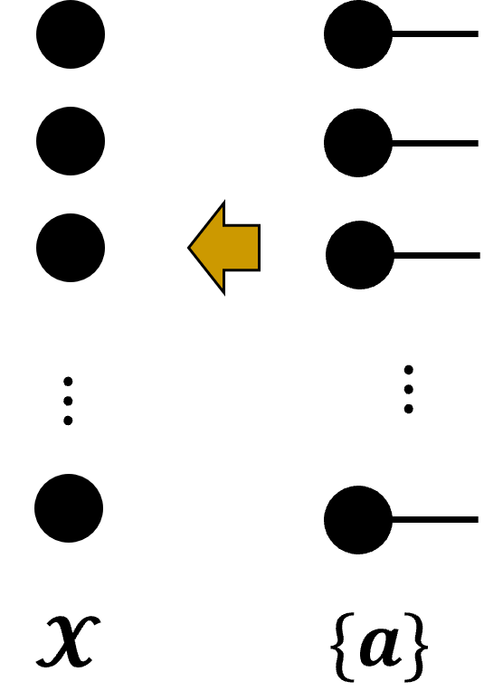
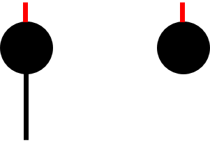
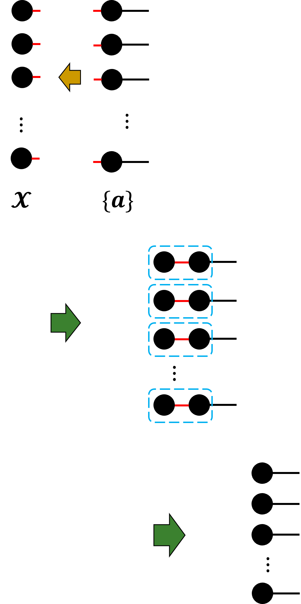

[1] "E:/home/ryoke/workspace/R/テンソルデータ解析の基礎と応用/test"R1D
R1D関数はどんな関数か
ランク1テンソルを再構成する関数
ランク1テンソル
N個のベクトルの外積
\[ \boldsymbol{a}_{1}\circ\boldsymbol{a}_{2}\circ\cdots\boldsymbol{a}_{N} \]
ランク1テンソルの作成方法
要素1のN階テンソル\(\mathbf{\mathcal{X}}\in\mathbb{R}^{1\times1\times \cdots \times1}\)に対して，ベクトル\(\{\boldsymbol{a}_{1},\boldsymbol{a}_{2},\cdots,\boldsymbol{a}_{N}\}\)を逐次的に外積する.
Note
外積：ベクトルを並べる操作
つまり，バラバラの状態の\(\{\boldsymbol{a}_{1},\boldsymbol{a}_{2},\cdots,\boldsymbol{a}_{N}\}\)を並べると，\(\boldsymbol{a}_{1}\circ\boldsymbol{a}_{2}\circ\cdots\boldsymbol{a}_{N}\)になる.
⇒TMallを使う
- 外積なのに何故？
\(\mathbf{\mathcal{X}}\)と\(\{\boldsymbol{a}\}\)の全モード積をとっているとも考えられるから
\(\mathbf{\mathcal{X}}\)と\(\{\boldsymbol{a}\}\)の全モード積
- \(N\)階テンソル\(\mathbf{\mathcal{X}}\)について
\(N\)個のベクトルの外積と捉える
大きさ1のベクトル（スカラー）が\(N\)個
全体で見るとスカラーなので脚は無し
- \(N\)個のベクトル\(\{\boldsymbol{a}_{1},\boldsymbol{a}_{2},\cdots,\boldsymbol{a}_{N}\}\)について
ベクトルが\(N\)個.
まだ並んではいない
全モード積を計算
\(\mathbf{\mathcal{X}}\)と\(\{\boldsymbol{a}\}\)の全モード積

Note
Q. どこを繋げるのか.
A.サイズ1の脚（mode）どうし
ベクトルはサイズ\((I_{n}\times1)\)スカラーはサイズ1と考える

サイズ1の脚どうしを繋ぐと
ベクトルになった
これを全モードについて行うと，

ランク１テンソルの完成！
ランク1テンソルの作成方法：要素1のN階テンソル\(\mathbf{\mathcal{X}}\in\mathbb{R}^{1\times1\times \cdots \times1}\)とベクトル\(\{\boldsymbol{a}_{1},\boldsymbol{a}_{2},\cdots,\boldsymbol{a}_{N}\}\)の全モード積をとる.
⇒TMall
Rコードを作成
R1D関数を使わずにランク1テンソルを作成
1. 要素が1のテンソルを作成
3階テンソル\(\mathbf{\mathcal{G}}\in\mathbb{R}^{1\times1\times1}\)
nRank <- 3
shape <- rep(1,nRank)
G <- array(1 ## 全要素1
,shape)最初に階数nRankを設定
サイズshapeは、1を階数個分繰り返す
計算用のオブジェクトにコピー
X <- G確認
- 要素1の\(\mathbf{\mathcal{X}}\in\mathbb{R}^{1\times1\times1}\)
print(X), , 1
[,1]
[1,] 1- サイズが\((1\times1\times1)\)
print(shape)[1] 1 1 12. ベクトルのリストを作成
ベクトルの集合\(\{\boldsymbol{a}\}\)
行列型で作成する
領域確保
listA <- NULLlistAにベクトルを格納していく
for(n in c(1:nRank)){
le <- n+1 ## ベクトルごとに列数を変える
## 行列型で生成
## 要素の値も確認したいので，簡単な要素にした。2025/04/17
A_n <- matrix(c(1:le)
, ncol = 1)
listA[[n]] <- A_n
}確認
print(listA)[[1]]
[,1]
[1,] 1
[2,] 2
[[2]]
[,1]
[1,] 1
[2,] 2
[3,] 3
[[3]]
[,1]
[1,] 1
[2,] 2
[3,] 3
[4,] 43. テンソルにベクトルを外積していく
テンソル\(\mathbf{\mathcal{X}}\)と\(\{\boldsymbol{a}\}\)
X1 <- TMall(Tensor = X
, listA = listA
, .isDebug = TRUE)[1] 3
[1] 1 1 1
[,1]
[1,] 1
[2,] 2
[1] 1 1 1
[1] 2
[1] 2 1
[1] 1 1
[1] 2 1
[,1]
[1,] 1
[2,] 2
[3,] 3
[1] 2 1 1
[1] 3
[1] 3 1
[1] 1 2
[1] 3 2
[,1]
[1,] 1
[2,] 2
[3,] 3
[4,] 4
[1] 2 3 1
[1] 4
[1] 4 1
[1] 1 6
[1] 4 6確認
print(X1), , 1
[,1] [,2] [,3]
[1,] 1 2 3
[2,] 2 4 6
, , 2
[,1] [,2] [,3]
[1,] 2 4 6
[2,] 4 8 12
, , 3
[,1] [,2] [,3]
[1,] 3 6 9
[2,] 6 12 18
, , 4
[,1] [,2] [,3]
[1,] 4 8 12
[2,] 8 16 24dim(X1)[1] 2 3 4X1のサイズがlistAの各要素のサイズと一致
R1D関数のコード
# R1D関数 ---------------------------------------------------------------------
R1D <- function(listA){
## 因子ベクトル{lista}の個数
N <- length(listA)
## N階テンソルX1の作成
X1 <- array(1,rep(1,N))
## X1と{a}の全モード積を計算
X <- TMall(X1,listA)
return(X)
}引数：ベクトル\(\{\boldsymbol{a}\}\)（ベクトル（行列型）のリスト）
N階テンソル\(\mathbf{\mathcal{X}}\in\mathbb{R}^{1\times1\times \cdots \times1}\)は，関数内で生成した. （関数外の方が良い？）
- サイズ（shape）:
rep(1,N)1をN回繰り返す.
- サイズ（shape）:
R1D関数を使ってランク１テンソルを作成
引数:listA
[[1]]
[,1]
[1,] 1
[2,] 2
[[2]]
[,1]
[1,] 1
[2,] 2
[3,] 3
[[3]]
[,1]
[1,] 1
[2,] 2
[3,] 3
[4,] 4X2 <- R1D(listA = listA)確認
dim(X2)[1] 2 3 4同一性の確認
all.equal(X1,X2)[1] TRUE⇒R1D関数は正しく動いた.